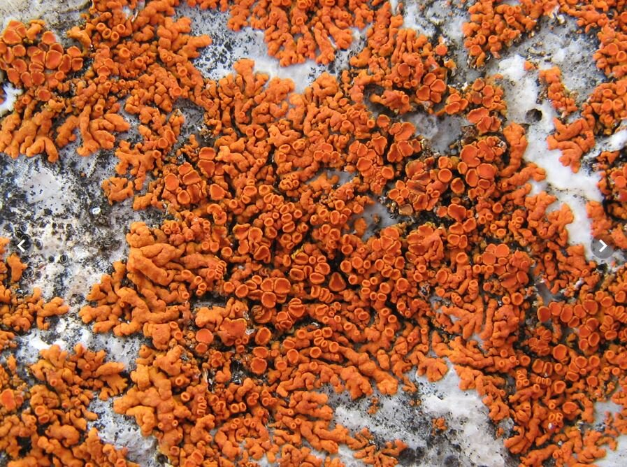
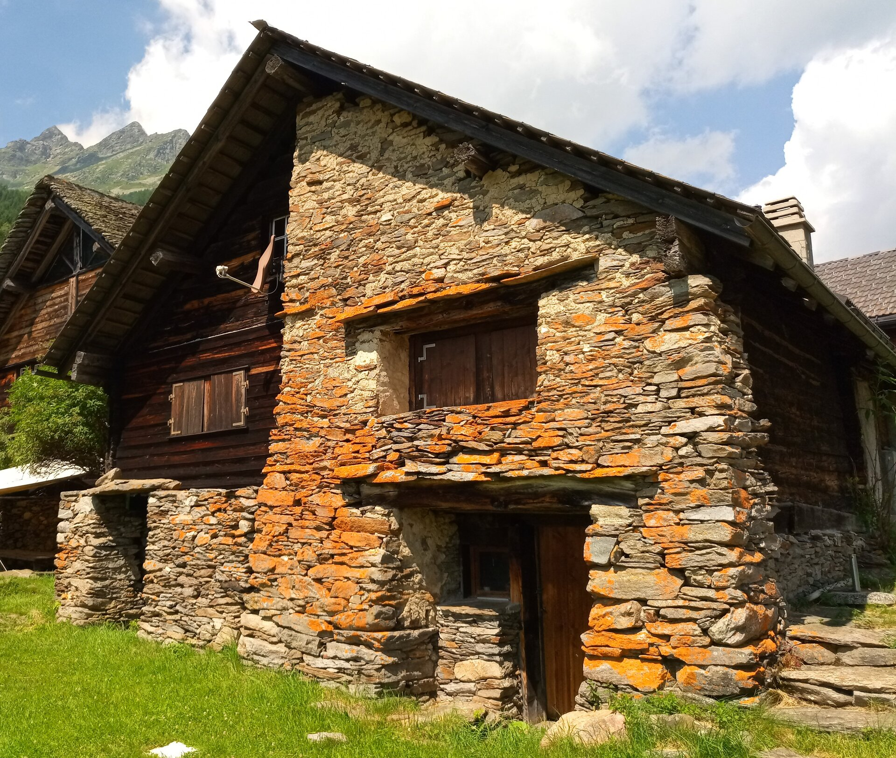
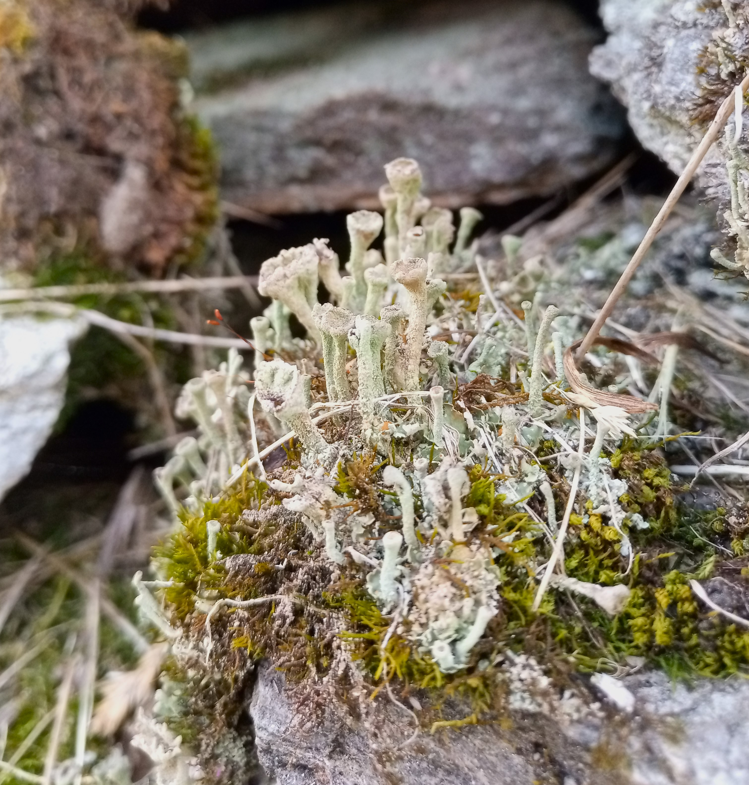
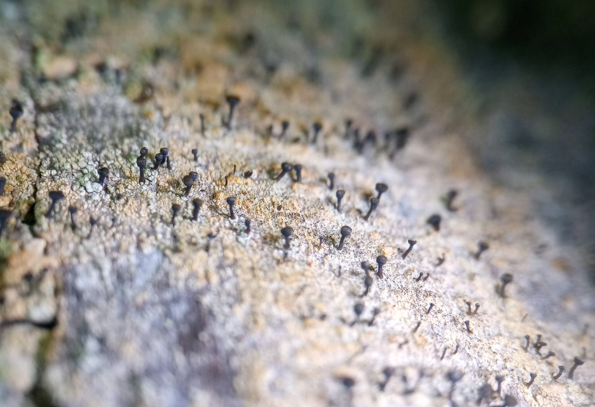

1 Flechten
1.1 Einleitung Flechten
Flechten sind Doppelorganismen, welche aus mindestens einem Pilzpartner (Mykobiont) und einem Algenpartner (Photobiont) bestehen. Während der Pilz das Gehäuse der Flechte ausbildet und den Algenzellen Schutz vor Fressfeinden bietet, produzieren diese durch Photosynthese Zucker, welche dem Pilz als Nahrung dient. Bei vollständiger Austrocknung verfallen Flechten in einen vorübergehend leblosen Zustand, bis sie wieder durch Niederschlag oder hohe Luftfeuchtigkeit befeuchtet werden. Grundsätzlich sind Flechten sehr konkurrenzschwach, vor allem gegenüber Gefässpflanzen, doch als wechselfeuchte Organismen, können sie Extremstandorte besiedeln (z.B. blankes Gestein). Von den schweizweit ca. 2000 bekannten Arten, konnten in der Umgebung von Ces bisher 111 Arten registriert werden.
1.2 Zierliche Gelbflechte (Xanthoria elegans)


Die orange Färbung der Hausfassade stammt von der Flechte Xanthoria elegans (Link) Th. Fr., welche oft auf Silikatgestein zu finden ist.
1.3 Trompetenflechte (Cladonia fimbriata)

Cladonia fimbriata (L.) Fr. kann am nördlichen Dorfeingang auf den Steinen der Trockensteinmauer gefunden werden. Es handelt sich um eine weit verbreitete Flechtenart, welche auf Bäumen wie auch auf Moos-überwachsenen Steinen vorkommt.
1.4 Rostfarbenen Stecknadelflechte (Chaenotheca ferruginea)

In den Fichtenwaldbeständen konnten diverse Vorkommen von Stecknadelflechten registriert werden. Unter anderem auch zwei Funde der Rostfarbenen Stecknadelflechte (Chaenotheca ferruginea (Sm.) Mig.)
1.5 Fundmeldungen
1.6 Artenliste
Arthonia radiata (Pers.) Ach. (LC), Aspicilia caesiocinerea (Nyl. ex Malbr.) Arnold (NE), Bacidia rubella (Hoffm.) A. Massal. (LC), Bilimbia sabuletorum (Schreb.) Arnold s. lat. (LC), Brodoa intestiniformis (Vill.) Goward (NE), Bryoria fuscescens (Gyelnik) Brodo & D.Hawksw. ex RL2021 (LC), Buellia griseovirens (Turner & Borrer ex Sm.) Almb. (LC), Calicium tigillare (Ach.) Pers. (NE), Calicium trabinellum (Ach.) Ach. (LC), Caloplaca cerina (Hedw.) Th. Fr. (NE), Caloplaca pyracea (Ach.) Zwackh (NE), Candelaria concolor (Dicks.) Stein (LC), Candelariella reflexa (Nyl.) Lettau (LC), Candelariella vitellina (Hoffm.) Müll. Arg. s. lat. (LC), Candelariella xanthostigma (Ach.) Lettau (LC), Catillaria nigroclavata (Nyl.) J. Steiner (LC), Cetraria islandica (L.) Ach. subsp. islandica (LC), Chaenotheca chrysocephala (Ach.) Th. Fr. (LC), Chaenotheca ferruginea (Sm.) Mig. (LC), Chaenotheca furfuracea (L.) Tibell (LC), Chaenotheca trichialis (Ach.) Th. Fr. (LC), Chrysothrix candelaris (L.) J. R. Laundon (LC), Cladonia arbuscula (Wallr.) Flot. subsp. squarrosa (LC), Cladonia chlorophaea aggr. (LC), Cladonia coniocraea (Flörke) Spreng. (LC), Cladonia digitata (L.) Hoffm. (LC), Cladonia fimbriata (L.) Fr. (LC), Cladonia furcata (Huds.) Schrad. (LC), Cladonia macilenta Hoffm. (LC), Cladonia macroceras (Delise) Hav. (LC), Cladonia pyxidata (L.) Hoffm. (LC), Cladonia rangiferina (L.) F. H. Wigg. (LC), Cladonia squamosa Hoffm. var. squamosa (LC), Cladonia subulata (L.) F. H. Wigg. (LC), Cystocoleus ebeneus (Dillwyn) Thwaites (NE), Diploschistes muscorum (Scop.) R. Sant. (LC), Evernia divaricata (L.) Ach. (NT), Evernia mesomorpha Nyl. (NT), Evernia prunastri (L.) Ach. (LC), Flavoparmelia caperata (L.) Hale (LC), Hyperphyscia adglutinata (Flörke) H. Mayrhofer & Poelt (LC), Hypocenomyce scalaris (Ach.) M. Choisy (LC), Hypogymnia farinacea Zopf (LC), Hypogymnia physodes (L.) Nyl. (LC), Hypogymnia tubulosa (Schaer.) Hav. (LC), Imshaugia aleurites (Ach.) S. L. F. Mey. (LC), Lecania cyrtella (Ach.) Th. Fr. (LC), Lecanora carpinea (L.) Vain. (LC), Lecanora chlarotera Nyl. s. lat. (LC), Lecanora polytropa (Hoffm.) Rabenh. (NE), Lecanora pulicaris (Pers.) Ach. (LC), Lecanora symmicta (Ach.) Ach. s. lat. (NE), Lecanora varia (Hoffm.) Ach. (LC), Lecidea lapicida (Ach.) Ach. s. lat. (NE), Lecidea lithophila (Ach.) Ach. (NE), Lecidella elaeochroma (Ach.) M. Choisy f. elaeochroma (LC), Lecidella elaeochroma (Ach.) M. Choisy s.lat. (LC), Lecidella subviridis Tønsberg (NE), Lepraria finkii (B. de Lesd.) R.C. Harris (LC), Melanelixia glabratula (Lamy) Sandler & Arup (LC), Melanohalea exasperatula (Nyl.) O. Blanco, A. Crespo, Divakar, Essl., D. Hawksw. & Lumbsch (LC), Micarea prasina aggr. (LC), Montanelia disjuncta (Erichsen) Divakar, A. Crespo, Wedin & Essl. (NE), Myriolecis persimilis (Th. Fr.) Śliwa, Zhao Xin & Lumbsch (LC), Ochrolechia arborea (Kreyer) Almb. (NT), Ochrolechia microstictoides Räsänen (LC), Ochrolechia turneri (Sm.) Hasselrot (NT), Parmelia saxatilis (L.) Ach. (LC), Parmelia sulcata Taylor (LC), Parmelina tiliacea (Hoffm.) Hale (LC), Parmeliopsis ambigua (Wulfen) Nyl. (LC), Parmeliopsis hyperopta (Ach.) Arnold (LC), Peltigera didactyla (With.) J. R. Laundon (LC), Phaeophyscia pusilloides (Zahlbr.) Essl. (NE), Physcia adscendens (Fr.) H. Olivier (LC), Physcia caesia (Hoffm.) Fürnr. s. lat. (NE), Physcia dubia (Hoffm.) Lettau (NE), Physcia stellaris (L.) Nyl. (LC), Physcia tenella (Scop.) DC. (LC), Physciella chloantha (Ach.) Essl. (LC), Placynthiella icmalea (Ach.) Coppins & P. James (LC), Placynthiella oligotropha (J. R. Laundon) Coppins & P. James (NT), Platismatia glauca (L.) W. L. Culb. & C. F. Culb. (LC), Pleopsidium chlorophanum (Wahlenb.) Zopf (NE), Polycauliona candelaria (L.) Frödén, Arup & Søchting, (LC), Protoparmeliopsis muralis (Schreb.) M. Choisy s. lat. (NE), Pseudevernia furfuracea (L.) Zopf s. lat. (LC), Pseudosagedia aenea (Körb.) Hafellner & Kalb (LC), Psilolechia lucida (Ach.) M. Choisy (NE), Ramalina pollinaria (Westr.) Ach. (NT), Rhizocarpon geographicum (L.) DC. s.lat. (NE), Rhizocarpon lecanorinum Anders (NE), Rinodina capensis Hampe (NT), Rinodina pyrina (Ach.) Arnold (NT), Rinodina sophodes (Ach.) A. Massal. (NT), Scoliciosporum umbrinum (Ach.) Arnold s. lat. (LC), Sporastatia testudinea (Ach.) A. Massal. (NE), Trapeliopsis flexuosa (Fr.) Coppins & P. James (LC), Trapeliopsis granulosa (Hoffm.) Lumbsch (NE), Umbilicaria crustulosa (Ach.) Frey s. lat. (NE), Umbilicaria cylindrica (L.) Duby s. lat. (NE), Umbilicaria deusta (L.) Baumg. (NE), Umbilicaria polyphylla (L.) Baumg. (NE), Umbilicaria vellea (L.) Hoffm. (NE), Usnea hirta (L.) F. H. Wigg. (LC), Vulpicida pinastri (Scop.) J.-E. Mattsson & M. J. Lai var. soralifera (LC), Xanthoparmelia conspersa (Ehrh. Ex Ach.) Hale (NE), Xanthoparmelia pulla (Ach.) O. Blanco, A. Crespo, Elix, D. Hawksw. & Lumbsch s. lat. (NE), Xanthoria elegans (Link) Th. Fr. s. lat. (NE), Xylographa parallela (Ach. : Fr.) Fr. (NE), Lepraria